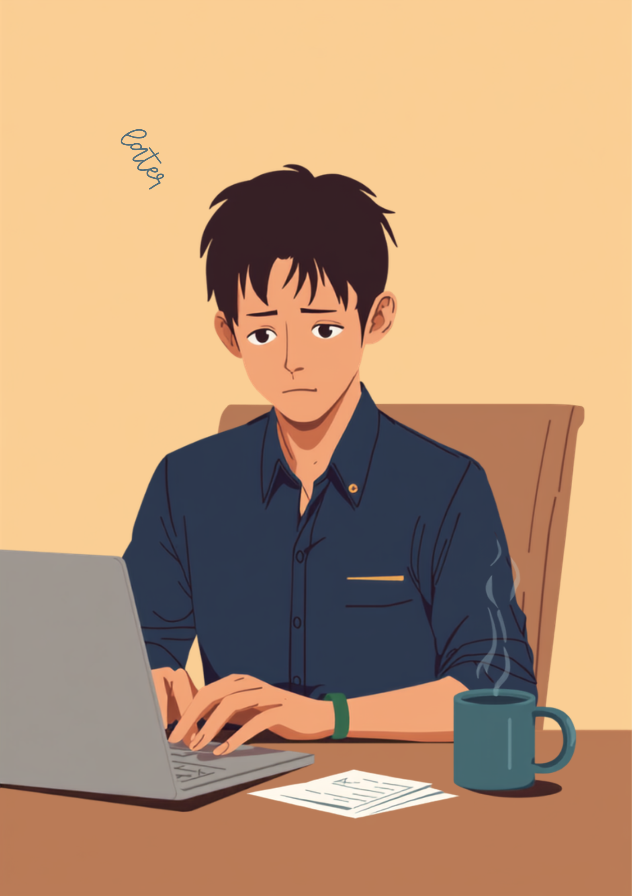

「読むのが遅い」と気づいた日、資料や会議でぶつかる壁
就労支援の現場で関わってきた中で、繰り返し聞いてきた言葉があります。「会議資料をみんなと同じ時間で読み終えられない」「メールを何度読み返しても、誤字を見落としてしまう」というものです。ディスレクシアのある方にとって、文字を読むことは、多くの人が無意識にできている作業を、一文字ずつ意識的に処理しているような感覚に近いとされています。頭の中では文字が入れ替わって見えたり、行を飛ばして読んでしまったりすることもあるようです。
本人としては、人一倍時間をかけて資料を読み込み、誤字を確認しているつもりでも、それでも見落としが残ってしまうことがあります。周囲からは「確認が甘い」「集中していない」という印象を持たれやすく、本人の努力と、周りに伝わる印象との間にずれが生まれやすくなります。
「正直言うと、入社して3年経った今も、メールの誤字脱字はゼロになりません。先輩に見せる前に3回くらい読み返してるつもりなんですけど、それでも『ここ、名前間違ってるよ』って指摘されることが月に2、3回はあって。文字を目で追ってるはずなのに、なぜか頭の中で違う文字に変換されちゃうというか…。最初は『ちゃんと確認してないだけでしょ』って自分を責めてたんですけど、去年病院でディスレクシアの傾向があるかもって言われて、少しだけ自分を許せるようになりました。」
「会議の前に配られる資料、みんな10分もあれば読み終わってるのに、自分は同じ量を読むのに倍くらい時間がかかるんです。だから会議が始まる頃にはまだ半分しか頭に入ってなくて、質問されても的外れな答えをしちゃったりして。半年前から、資料は前日までにもらえないか頼むようにしたんですけど、それだけでもだいぶ楽になりました。周りには『準備がいいね』って言われるんですけど、本当は追いつくために必死なだけなんですよね。」
なぜ「怠けている」に見えてしまうのか、集中力の波と読み書きの特性
ディスレクシアのある方は、文字を読む作業そのものに多くのエネルギーを使うため、読み書きが中心の時間帯に集中力が大きく落ち込みやすいとされています。一方で、会話や電話対応のように声でのやり取りが中心の場面では、負担が軽くなる方も多いようです。この「得意・不得意の波」が、周囲からは分かりにくいことが、誤解を生む一因になっているのかもしれません。
つまり「やる気がない時間帯」があるわけではなく、「読み書きに多くのエネルギーを使う時間帯」があると捉えると、少し見え方が変わってくるかもしれません。ディスレクシアについては、原因や特性の現れ方についてまとめている資料も増えてきています。たとえばLITALICOライフの解説記事では、症状や工夫・対処法について紹介されています。気になる方は参考にしてみてください。
職場でできる工夫と、伝え方のヒント
職場でよく使われている工夫には、次のようなものがあるとされています。合う・合わないは人によって異なるため、いくつか試しながら自分に合う方法を探っていく形になることが多いようです。
- 資料は前日までに共有してもらい、事前に目を通す時間を確保する
- 音声読み上げソフトやスクリーンリーダーを使って耳からも情報を入れる
- フォントサイズを大きくする、行間を広げるなど表示を見やすく調整する
- 重要な文書は、送信前にもう一人にダブルチェックをお願いする
- 会議はメモよりも録音や議事録を頼り、あとから見返せるようにする
具体的な場面に絞って伝えるという考え方
特性の仕組みや診断名をすべて説明しようとすると、かえって伝わりにくくなることがあります。業務に関わる具体的な場面だけに絞って伝える方法が、双方にとって負担が少ないとされています。
- 「資料は前日までにいただけると助かります」
- 「音声で確認できると読み間違いが減ります」
- 「重要な文書は、送信前に一度チェックしてもらえますか」
- 「読むのに人より時間がかかりますが、内容の理解に問題はありません」
診断名や特性の詳細まで伝える義務はありません。信頼できる上司や人事担当者に、業務に関わる範囲でまず共有し、そこから必要な情報だけをチーム内に広げてもらう、という進め方をとっている方もいるようです。
使える制度と、一人で抱えないための相談先
精神障害者保健福祉手帳という選択肢
ディスレクシアを含む学習障害は、状態によって精神障害者保健福祉手帳の対象となる場合があります。取得の可否は医師の診断や、日常生活・就労への影響の程度によって異なるため、詳しくは主治医や自治体の障害福祉窓口に確認するのが確実です（2026年8月時点の情報です）。手帳を取得すると、障害者雇用枠での就職や、企業側の合理的配慮を前提にした働き方を選びやすくなる場合があります。
発達障害者支援センターという窓口
発達障害者支援センターでは、読み書きの特性を含む発達障害に関する相談を受け付けています。就労に関する悩みだけでなく、日常生活の困りごとについても相談できる場合があるとされています。お住まいの地域のセンターは、自治体のホームページなどで確認できます（2026年8月時点の情報です）。
相談できる窓口
- 主治医・発達外来（診断や、職場向けの意見書の相談）
- 発達障害者支援センター（就労・生活に関する相談窓口）
- ハローワークの障害者専用窓口（求人紹介・職業相談）
- 就労移行支援事業所（読み書きの工夫を含めた就労準備や職場との調整）
よくある質問
関連記事
mimemime代表。就労支援の現場経験をもとに、障がいのある方の働く不安に寄り添う記事を執筆。